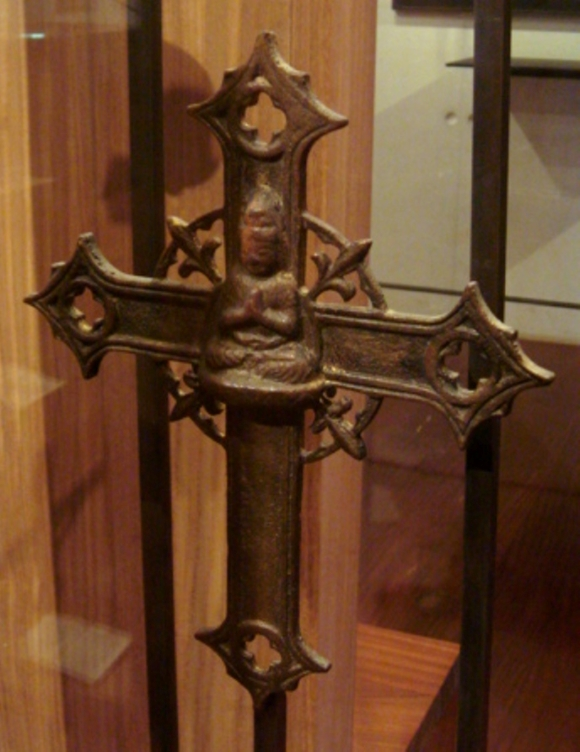

Japan | Tokugawa Shogunate
Closed Country Japan?
September 2020
The Japanese period of 1603-1868 is called Sakoku, or 'closed country'. But, to what extent was it locked from the outside world?
Introduction
To reiterate: the period between 1603 and 1868 has been called Sakoku (meaning closed country) by historians. It is true that the Tokugawa dynasty of shoguns (who reigned at the time) had isolationist policies, but the land was not fully locked from the outside world.
Isolation
While the Tokugawas reigned as shoguns (the entire Sakoku period), they banned almost every country from contacting or trading with Japan. The Netherlands was the only Western nation that could deal with the Japanese, and even they were precisely monitored by the authorities.

The Tokugawa were shogun (lord) of Japan throughout 'Sakoku'. Here is the first shogun: Ieyasu.
Countries don't isolate so intensely without reason. So, to understand the century-long lockdown of Japan, we must delve into the events that happened before Sakoku - when Japan first came in contact with the West.European arrival
The first Europeans to set foot on Japan were a handful of Portuguese traders - that was in 1543. It was Japan's introduction to a world far beyond the stretches of its own island: they were introduced to new objects, science and religion.
Religion
In fact, the introduction of the new religion (Christianity) caused quite some turmoil in Japan: besides just trading, Portugal and Spain were rather strongly occupied with the spread of the Christian faith. These Iberian Jesuits were so successful that a sizable chunk of Japanese turned Christians; even Damyos officially converted their region's faith to Christianity.
A Japanese crucifix with a buddha in the center: such conversion of 2 religions is called syncretism. It is quite common for cultures adopting new traditions to mix them with things close to home.
Within the span of 50 years (from 1550s to 1600s), it became apparant how aggressive and successful the Iberian spread of Christianity was. Several farmers and poor laboreres who had turned to the foreign religion revolted against the government. The converted Damyos also formed a direct threat to the shogun's legitimacy. .
Crushing rebelions
It's safe to say that around 1600, Japan was unstable. Damyos illegitimized the shogun, revolts caused trouble and the introduction of Christianity brought about cultural uncertainty.
It is this instability (attributed to the arrival of the Europeans) that the first Tokugawa shogun found so troubling. The (quite) tremendous instability that preceded Sakoku is the reason why the Tokugawa shoguns banned Europeans from entering and illegalized worship to a Christian God.
How Closed was Japan?
Having stated the above, the question remains: how closed was Japan truly under Sakoku? The Dutch were key in this question - in fact they were the perfect gatekeeper ánd gateway that the Tokugawas needed. The mercantile Dutchmen cared little for spreading Christianity (unlike the Iberians who sought spread faith in Latin America and.. practically everywhere they went).The Dutch were only allowed to set foot on this island: Dejima
The Dutchmen gave them products from all across the world. They delivered books on Dutch science and art right to Japan's doorstep - and practically no questions were asked. That's why Rangaku (meaning Dutch studies) is one of the strongest keywords attributed to the period of Sakoku.
How Closed was Japan?
Despite a lockdown of sorts, Japan had effective access to every part of the world: the Dutch (with their global presence) were simply their gatekeeper. They learned Western science through Dutch books and could observe how they built their ships and organized their harbor.The history of an aggressive spread of Christianity and strong instability makes us understand a boycot of countries (even the Dutch) entering Japanese soil. But its trade and access to the world stage meant that Japan was not locked to the degree that 'Closed Country Japan' (Sakoku) suggests.
A viral video on the history of Japan. It's quite educative and accurate too.